概要
有限状態オートマトンの到達可能性と前綴木、2台のオートマトンの等価性判定、ループの削除と反復、状態のグループ分けと最小化についての会話です。
原典：共有会話1
想定読了時間：約12分
言語オートマトン 第4回
質問 1
ChatGPT の回答 1
状態が 個なら、到達できる状態には、必ず 文字以下の入力で到達できる、という話。
理由は、
- 文字以上読むと、初期状態も含めて 回以上状態を通るので、必ず同じ状態を再訪する。
- その「一周して戻った部分」を入力から取り除いても、最終的に同じ状態に着く。
- これを繰り返せば、寄り道のない 文字以下の入力にできる。
したがって、到達可能な状態を全部調べるには、長さ 以下の入力だけ試せばよい。
質問 2
ChatGPT の回答 2
例えば 、文字の種類が とする。
長さ 以下の文字列を並べると、
となる。これを木で表したのが次の図。

根からたどった矢印の文字をつなぐと、その頂点の文字列になる。 例えば「 → 」とたどれば 。
この図は 3段で、矢印をたどる回数は最大2回。各頂点はオートマトンの状態ではなく、入力する文字列を表している。
※スライドの「長さ 以下」は、集合の式と前のスライドに合わせると「長さ 以下」の誤記と考えられる。
質問 3
ChatGPT の回答 3
うん、高さを「根から葉までの辺の本数」と数えるなら、高さ で足りる。
さっきの の例なら、
- 最長の文字列：長さ 2
- 木の高さ：2
- 根を含めた段数：3
だから、スライドの「高さ 」も誤記で、辺で数えるなら 、段数で数えるなら が正しい。
質問 4
ChatGPT の回答 4
同じ文字列を両方に入力して、「受理するかどうか」が食い違うものを探すという方法。
- 2つのオートマトンに、同じ文字列 を入力する。
- 片方だけ受理したら、等価ではないと確定。
- 一定の長さまで全部試しても食い違わなければ、等価と判定する。
なぜ有限の長さまで調べるだけでよいのか？
2つの状態をペアにして追跡すると、
という、状態数が最大 のオートマトンと考えられる。
前のスライドより、到達できるペアには 長さ 以下で到達できる。だから、その長さまで調べれば、受理・非受理が食い違うペアの有無を確認できる。
この図では なので、長さ15以下を全部試せば十分。スライドでは余裕を含めて16以下としている。
質問 5
ChatGPT の回答 5
「左の現在地と右の現在地」をセットにして、1つの状態として扱うということ。
例えば、どちらも状態が2個のオートマトンを考える。入力文字は だけとする。
| オートマトン | 状態 | を読むと |
|---|---|---|
| と が交互に切り替わる | ||
| から に移り、その後は のまま |
最初は、それぞれ にいるとする。同じ入力を両方に与えると、
| 入力済みの文字列 | の現在地 | の現在地 | セットにした状態 |
|---|---|---|---|
つまり、2台を同時に動かす様子を、次の1台で表せる。
ペアの候補は、
の 個。ただし、この例では には到達しないので、図には3個しか登場しない。
これが「状態数が最大 」という意味。
等価性を調べるときは、このペアの中に『片方だけ受理状態』となるものが現れるかを調べればよい。
質問 6
ChatGPT の回答 6
**「同じ状態から同じ文字を読めば、必ず同じ状態に進む」**という意味。
例えば、文字列 と を読んだ結果が、どちらも だったとする。また、
とする。
すると、前綴木のそれぞれの場所で、子のラベルはこうなる。
| 親の文字列 | 親の状態ラベル | を追加した子 | を追加した子 |
|---|---|---|---|
| ： | ： | ||
| ： | ： |
そこまでに読んだ文字列が違っても、現在の状態が同じなら、その先の動きは同じになる。
スライドの「子のラベルはすべて同じ」は、同じ文字の枝に対応する子同士が同じという意味。 の子も の子も全部同じ状態になる、という意味ではない。
質問 7
ChatGPT の回答 7
最初に見せてくれた「ループを取り除ける」というスライドと、内容は同じ。今回は取り除く部分に と名前を付けている。
入力を
と分けると、
- ：途中の状態 に着くまで
- ： から一周して、同じ状態に戻る部分
- ：そこから最後の状態 に進む部分
となる。だから、 を削って を入力しても、同じ に到達する。
直前の「前綴木」の話との関係は、同じ状態なら、その先に同じ を読ませた結果も同じなので、この削除ができる、ということ。
質問 8
ChatGPT の回答 8
正則言語の十分長い文字列には、「削除しても、何回繰り返しても、その言語に属したままになる部分」が必ずあるということ。
つまり、 と分けて、
がすべて同じ言語 に属するような、空でない部分 がある。
理由は、 がオートマトンのループに対応するから。 さっきはループを「削る」話だったが、今回は「何周してもよい」と言っている。
質問 9
ChatGPT の回答 9
、 の場合で説明するね。
① 長さ 以下の文字列を、前綴木に並べる。
節点は
の7個なので、
となる。
② 各節点に「その文字列を入力したら受理されるか」を付ける。
例えば、あるオートマトンでは次のようになる。
| 入力文字列（節点） | |||||||
|---|---|---|---|---|---|---|---|
| 受理する？ | × | × | × | ○ | × | × | × |
各節点は○か×の2択だから、7個の節点への色の付け方は 通りある。
ただし、そのすべてが3状態のオートマトンで実現できるとは限らない。
③ なぜ長さ2まで見るのか？
3状態なら、どの状態から出発しても、そこから到達できる状態には長さ2以下の入力で到達できるから。
つまり、このスライドは **「各状態から短い入力を試したときの、受理・非受理のパターンを考えよう」**と言っている。
※「長さ 」は正確には「長さ 以下」。また、 は、この例のように の場合の式。
質問 10
ChatGPT の回答 10
「今と、1文字読んだ後の受理・非受理のパターン」で、状態をグループ分けする方法。 受理を 、非受理を として表を書き換えている。
例えば なら、
- 今：受理状態なので
- の後： は受理状態なので
- の後： は非受理状態なので
よって、パターンは 。
全状態を調べると、
| 状態 | 今 | の後 | の後 | グループ |
|---|---|---|---|---|
| 1 | 1 | 0 | A | |
| 0 | 0 | 1 | B | |
| 1 | 1 | 0 | A | |
| 0 | 0 | 1 | B |
つまり、 は同じグループ、 は同じグループになる。
一般には、この後も「遷移先がどのグループか」で分類を繰り返し、分かれなくなったら同じグループの状態をまとめる。この例では、そのまま A・Bの2状態にまとめられる。
質問 11
ChatGPT の回答 11
目的：受理する文字列を変えずに、状態の数をできるだけ減らす。
初期状態からたどり着けない状態を削除する。
状態を「受理状態」と「非受理状態」の2グループに分ける。
各グループを、遷移先の違いによってさらに分ける。
同じグループの状態でも、例えば「 を読むと移る先のグループ」が違えば、別グループにする。すべての入力文字について調べる。グループ分けが変わらなくなるまで、3を繰り返す。
最後に、同じグループの状態を1つにまとめる。
同じグループに残った状態は、そこからどんな文字列を読んでも、受理・非受理の結果が一致するので、まとめてよい。